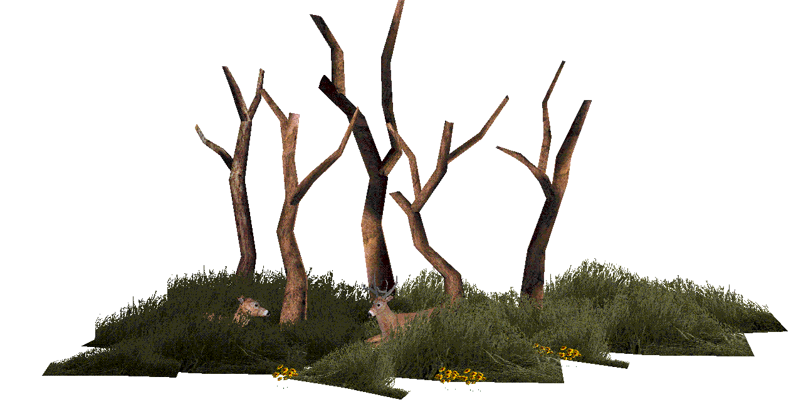

Other Reading
- "Amazing Whitetails" by Mike Biggs, 1994
- "The Whitetail Chronicles" by Mike Biggs, 1998
- "Whitetails in Action" by Mike Biggs, 1996
- "The First Created Man" by St. Symeon the New Theologian (+1022) (translated by Fr. Seraphim Rose)
- "The Resurrection and the Icon" by Michel Quenot, 1998
- "Touching the Wild: Living with the Mule Deer of Deadman Gulch" by Joe Hutto, 2014
- "Illumination in the Flatwoods: A Season Living Among the Wild Turkey" by Joe Hutto, 2011
- PBS has produced two episodes of "Natural World" based on the above two books by Joe Hutto. They are absolutely worth watching, titled "Touching the Wild" and "My Life as a Turkey".
